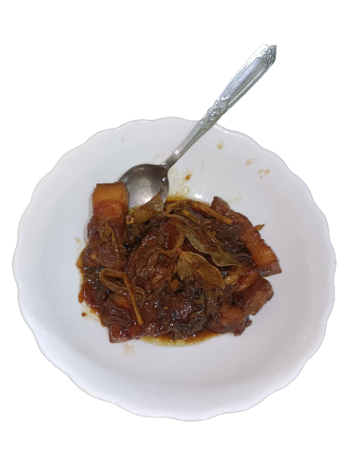

Humba is a dish of tender pork, salted black beans, and an assortment of spices.
With its deep flavor palate and numerous ingredients,
it is the perfect combination of sweet and savory –– two such flavors that Filipinos adore. This recipe is by Panlasang Pinoy.
Ingredients:
- Pork belly
- Pineapple juice
- Salted black beans
- Soy sauce
- Vinegar
- Banana blossoms
- Dried bay leaves
- Peppercorn
- Brown sugar
Steps:
- In a hot cooking pot, toss in your pork belly and let it cook until it browns.
- Add in the onion and garlic slices you have and cook, until your onions soften.
- Then, add in your 2 tablespoons of soy sauce, peppercorn, and bay leaves
- Next, pour in 1 cup of pineapple juice and bring your humba to a boil.
- Cover the pan and let your dish simmer until your pork becomes tender.
- If you feel like it’s getting a little too dry for your taste, feel free to add water in as well. This should take about 30 to 40 minutes.
- When that time has passed, add in 2 tablespoons of vinegar and wait for your mixture to re-boil.
- Let your dish simmer for about 3 minutes, then spoon in the salted black beans.
- Add in your brown sugar as well, then give your humba 5 minutes more
- Lastly, take your dried banana blossoms and toss them into the pot.
- Cook all of your humba ingredients together for the last 5 to 8 minutes.